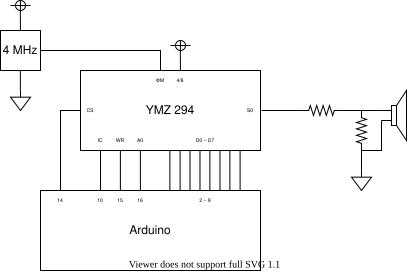
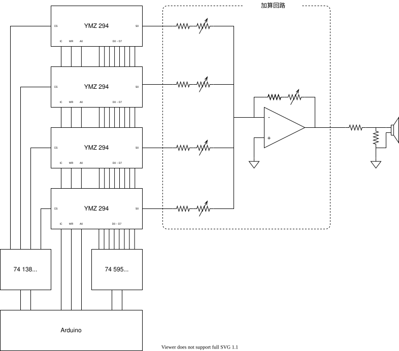

ヤマハ製の音源 IC YMZ294 を使ってみた
YMZ294でロックマン pic.twitter.com/W3yztZKuT6
— Канадэ (@kanade_k_1228) November 26, 2021
必要な部品
チュートリアル
- リポジトリのページ右上の Code から、zip を選択しダウンロード
- ダウンロードした zip ファイルを Arduino IDE に取り込む（Sketch > Include Library > Add .ZIP Library…）
- サンプルコードを開きます (File > Examples > YMZ294 > 00_include ) 見つからない場合は、Arduino IDEを再起動すると見つかると思います
- 検証(✓マーク)を押してみて、エラーが起きなければ、無事にインストール完了です！
- Arduino と YMZ294 を配線で繋ぎます

- サンプルコードから、01_sound を開いて、書き込んだら、音が鳴るはずです！
トラブルシューティング
- 音が出ない！！！
- 接続されているピン番号は合っていますか？（根気よく確かめて…）
- SO-GND 間に抵抗は繋いでいますか？
YMZ294 のしくみ
音が生成されるまでの流れを解説するよ！ データシートの図を参照してね！
- 楽音発生器
- ある決まった周波数の矩形波（四角形の波）を生成します
- 正弦波（音叉のようなきれいな音）ではない
- 基準クロックを分周して生成している
- ミキサー
- 各チャンネルごとの ON/OFF を切り替えます
- （リアルのミキサーと違って）音量はここでは調整しないことに注意
- 音量調整
- 各チャンネルごとの音量を調整します
- 音量はデシベル値で設定します
- デシベルは
dB = log10対数であることに注意
- デシベルは
YMZ294 のしくみ（詳細版）
「ノイズ」「エンベロープ」という機能を使うとより豊かな表現ができるよ！
- 楽音発生器
- ノイズ発生器
- ミキサー
- エンベロープ発生器
- 音量調整
ライブラリの使い方
「sample」の中にサンプルコードがあるのでいろいろ試してみて！
- YMZ294 のピンがどこに繋がっているかを設定します
YMZ294 sound()
setup関数の中で、ピンのセットアップと、YMZ294 のリセットをしますsound.setup_pin()sound.reset_registers()
- 音の設定をして再生します
高度な使い方
好きな音楽を再生する
- MIDI エディタで曲を打ち込む
- Dominoがおすすめ
- Domino 用のテンプレートファイルが
sample/07_play_music/template.dmsにあります - 曲を打ち込んだら
.midファイルを出力
.midiを.hに変換する- Midifles に変換プログラムがあるので、
cdgit clone https://github.com/kanade-k-1228/midifile.gitcd midifilemake librarymake programsmake midi2ymz- して、プログラムをビルドしてください
bin/midi2ymz ???.mid > ???.hで変換します（???は自分で作った midi ファイル名を入れる）
- include して書き込む
???.hをsample/07_play_music内に移動します07_play_music.inoの先頭の#include "XXX.h"を#include "???.h"に書き換えます- エラーが出た場合
- メモリが足りない？
PROGMEMが悪さをしてる？
sample/06_play_rockman の loop() を見ると、たくさんの play_sound() と delay() が並んでいます。このやり方では、Arduino のプログラムメモリを無駄遣いしてしまい、長い曲を再生できません。このため、ここだけのデータフォーマットを作って曲のデータを表現しています。
| 15 | 0:Delay 1:Sound | 切り替えます | |
| IF Delay | |||
| 14 | 0 | Delay Time [ms] | |
| IF Sound | |||
| 14 | 13 | Chip Sellect | 複数接続しない場合、チップセレクトは不要です |
| 12 | 11 | Channel | 1~3 のチャンネル番号を指定 0 番は予約済（ノイズ周波数に使う予定） |
| 10 | 4 | Note Number | |
| 3 | 0 | Velocity |
複数接続
YMZ294 は 矩形波 3 チャンネルしかありません。ファミコンは矩形波 2 Ch + 三角波 1 Ch + ノイズ 1 Ch あるので、ファミコンの曲を再生しようとすると少し足りなかったりします。
ノイズを再生しようとすると、ノイズと矩形波の個別の音量調整ができないので、結局チャンネルを一つつぶすことになります。
YMZ294 には、「/CS」（チップセレクト）というピンがあり、これを使って複数の YMZ294 を並列に接続できます。
Arduino ピンが足らなくなるので、シフトレジスタを使って拡張します。
